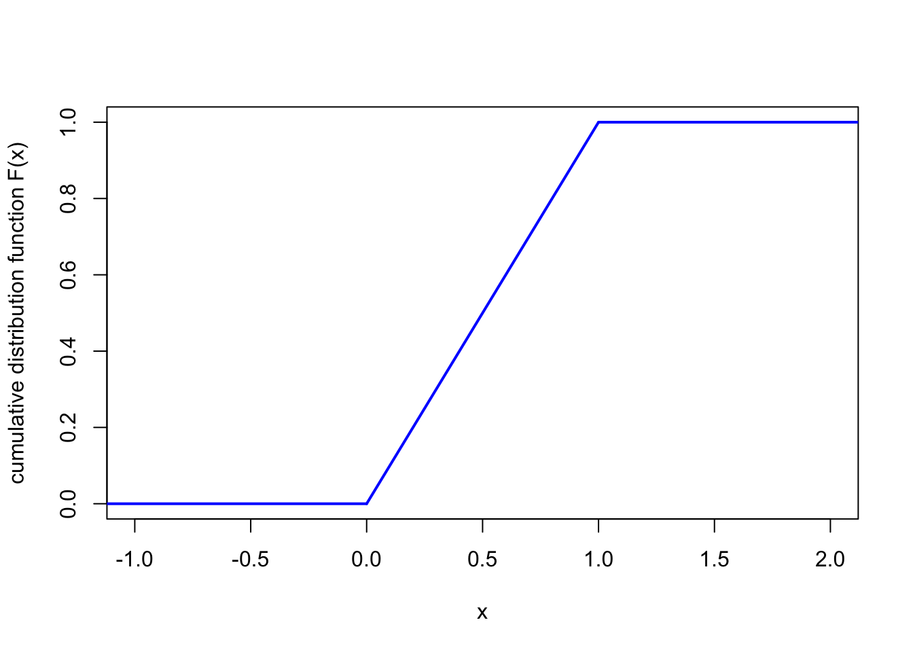
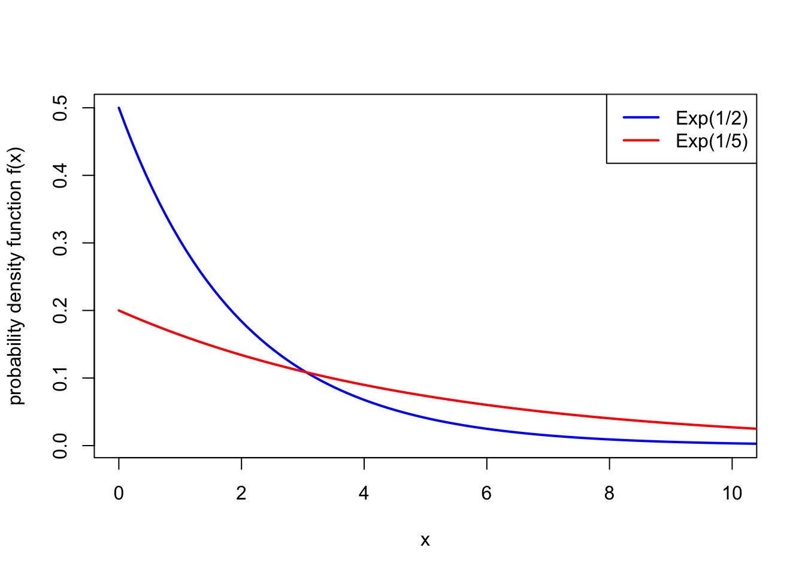

Section 8 Continuous random variables
8.1 What is a continuous random variable?
In the previous three sections, we have looked at discrete random variables, whose range is a finite (or countably infinite) set of separate discrete values. Discrete random variables can be used as a model for “count data”.
In this section and the next, we will instead look at continuous random variables, whose range is an uncountable set, a continuum of gradually varying values. Continuous random variables can be used as a model for “measurement data”. For example:
- The assets of a bank at the end of this year could be modelled as a continuous random variable with range the real numbers \(\mathbb R\), where positive numbers represent credit and negative numbers represent debt.
- The amount of time a machine in a factory works for before breaking down could be modelled as a continuous random variable with range the positive real numbers \(\mathbb R_+ = \{x \in \mathbb R : x \geq 0\}\).
- The unemployment rate in the UK next January, as a proportion of the population, could be measured as a continuous random variable with range the interval \([0, 1] = \{x \in \mathbb R : 0 \leq x \leq 1\}\).
Imagine firing an arrow at a large target. We could ask “What’s the probability that the arrow exactly hits some point?” – but this question is difficult to answer. What do we mean by a point? If we mean a mathematically-idealised infinitesimally small point, then I think we’d have to say that the probability is 0. What makes more sense is too take a section of the target – perhaps a small circle in the middle, called the “bulls-eye” – and ask what is the probability that the arrow lands in the area of the bulls-eye. Then we could (at least in theory) answer that question – a good archer would have quite a high probability of landing the arrow in the bulls-eye, while a poor archer would have a smaller chance.
Similarly, imagine picking a random real number between 0 and 1. We could ask “What is the probability that the random number is exactly \(1/\sqrt{2} = 0.7071068\dots\)?” But that probability is 0. It makes more sense to take an interval of numbers – say, \([0.7, 0.8]\), the interval from \(0.7\) to \(0.8\) – and ask what the probability is of the random number being in that interval.
This is how continuous random variables work. The probability a continuous random variable \(X\) exactly hits some value \(x\) is \(\mathbb P(X = x) = 0\). But we can find the probability \(\mathbb P(a \leq X \leq b)\) that \(X\) lies in a certain interval and work with that.
8.2 Probability density functions
With a continuous random variable, the probability of exactly getting any particular outcome \(X = x\) is 0. However, we can express the “intensity” of probability around \(x\) by \(f_X(x)\), where \(f_X\) is called the probability density function. The implied metaphor here is that for discrete random variables, we have probability “mass” at the point \(x\), whereas for continuous random variables, we have a “density” of probability around \(x\).
Definition 8.1 A random variable \(X\) is called a continuous random variable if the probability of landing in any interval between \(a\) and \(b\), for \(a \leq b\), can be written as \[ \mathbb P(a \leq X \leq b) = \int_a^b f_X(x) \, \mathrm{d}x , \] for some non-negative function \(f_X\). The function \(f_X\) is called the probability density function (or PDF).
In other words, the probability that \(X\) is between \(a\) and \(b\) is the area under the curve of the PDF on that interval.
As with PMFs, when it’s obvious what random variable we’re dealing with, we omit the subscript \(X\) on the PDF \(f_X\).
Example 8.1 Let \(X\) be a continuous random variable with PDF \[ f(x) = 1 \qquad \text{for $0 \leq x \leq 1$} \] and \(f(x) = 0\) otherwise. This represents a random number between 0 and 1, where the intensity of the probability is equal across the whole interval. This is known as a continuous uniform distribution.

What is the probability that \(X\) is between 0.5 and 0.8?
We can calculate this using the definition above. We have \[\begin{align*} \mathbb P(0.5 \leq X \leq 0.8) &= \int_{0.5}^{0.8} f(x) \, \mathrm dx \\ &= \int_{0.5}^{0.8} 1 \, \mathrm dx \\ &= [x]_{0.5}^{0.8} \\ &= 0.8 - 0.5 \\ &= 0.3 . \end{align*}\]
Example 8.2 Let \(Y\) be a continuous random variable with PDF \[ f(y) = \begin{cases} y & \text{for $0 \leq y \leq 1$} \\ 2-y & \text{for $1 < y \leq 2$} \end{cases} \] and \(f(y) = 0\) otherwise. This represents a continuous value between 0 and 2 where the probability intensity is highest in the middle around 1 and is lower at the edges near 0 and 2.

What is the probability \(X\) is between \(\frac12\) and \(\frac32\)?
As before, we have \[ \mathbb P\big( \tfrac12 \leq Y \leq \tfrac32 \big) = \int_{\frac12}^{\frac32} f(y) \, \mathrm dy . \] But this time we have to be careful, because \(f(y)\) has different expressions below 1 and above 1. We will split the integral up into two parts based on this, to get \[\begin{align*} \mathbb P\big( \tfrac12 \leq Y \leq \tfrac32 \big) &= \int_{\frac12}^{1} f(y) \, \mathrm dy + \int_{1}^{\frac32} f(y) \, \mathrm dy \\ &= \int_{\frac12}^{1} y \, \mathrm dy + \int_{1}^{\frac32} (2-y) \, \mathrm dy \\ &= \left[ \tfrac12 y^2\right]_{\frac12}^1 + \left[ 2y-\tfrac12 y^2\right]_1^{\frac32} \\ &= \tfrac12 - \tfrac18 + \big(\tfrac62 - \tfrac98\big) - \big(2 - \tfrac12\big) \\ &= \tfrac34 . \end{align*}\]
8.3 Properties of continuous random variables
The good news is that almost all of the properties we know and love about discrete distributions also follow through for continuous distribution – except you swap the PMF for the PDF and swap sums for integrals.
| Discrete random variables | Continuous random variables |
|---|---|
| A discrete random variable \(X\) is defined by a probability mass function (PMF) \(p(x)\), which represents the probability of getting exactly \(x\). | A continuous random variable \(X\) is defined by a probability density function (PDF) \(f(x)\), which represents the intensity of probability around \(x\). |
| The PMF is positive, in that \(p(x) \geq 0\) for all \(x\). | The PDF is positive, in that \(f(x) \geq 0\) for all \(x\). |
| The PMF sums to 1, in that \[ \sum_{x} p(x) = 1. \] | The PDF integrates to 1 in that \[ \int_{-\infty}^{\infty} f(x) \, \mathrm{d}x = 1.\] |
| The cumulative distribution function (CDF) is \(F(x) = \mathbb P(X \leq x)\), and is given by a sum \[ F(x) = \sum_{y \leq x} p(y) .\] | The cumulative distribution function (CDF) is \(F(x) = \mathbb P(X \leq x)\), and is given by an integral \[ F(x) = \int_{-\infty}^x f(y) \, \mathrm{d}y .\] |
| The expectation is the sum \[ \mathbb EX = \sum_{x} x\,p(x) . \] | The expectation is the integral \[ \mathbb EX = \int_{-\infty}^{\infty} x\,f(x)\,\mathrm dx . \] |
| The expectation of a function \(g(X)\) of \(X\) is the sum \[ \mathbb Eg(X) = \sum_{x} g(x)\,p(x) . \] | The expectation of a function \(g(X)\) of \(X\) is the integral \[ \mathbb Eg(X) = \int_{-\infty}^{\infty} g(x)\,f(x)\,\mathrm dx . \] |
| Linearity of expectation says that \[ \mathbb E(aX+b) = a\mathbb EX + b .\] | Linearity of expectation says that \[ \mathbb E(aX+b) = a\mathbb EX + b .\] |
| The variance is \(\operatorname{Var}(X) = \mathbb E(X - \mu)^2\), which also has the computational formula \(\operatorname{Var}(X) = \mathbb EX^2 - \mu^2\). | The variance is \(\operatorname{Var}(X) = \mathbb E(X - \mu)^2\), which also has the computational formula \(\operatorname{Var}(X) = \mathbb EX^2 - \mu^2\). |
Note, however, one property that doesn’t follow through: Because, for a PMF, \(p(x) = \mathbb P(X = x)\) represented a probability, we had \(p(x) \leq 1\) for all \(x\). However, because, for a PDF, \(f(x)\) only represents intensity of probability, there’s no contradiction to having \(f(x) > 1\) (although keeping the integral to 1 means that we can’t have \(f(x) > 1\) too much). So \(f(x) = 10\) for \(0 <x < 0.1\) and \(f(x) = 0\) otherwise is a perfectly legitimate PDF, for example.
Example 8.3 Let’s return to the case where \(X\) be a continuous uniform distribution, with \[ f(x) = 1 \qquad \text{for $0 \leq x \leq 1$} . \] Let’s go through the properties from the table above.
First, it’s clear that \(f(x) \geq 0\) for all \(x\).
Second, the PDF does indeed integrate to 1, because \[ \int_{-\infty}^\infty f(x) \, \mathrm dx = \int_0^1 1 \, \mathrm dx = [x]_0^1 = 1 . \] Because this PDF is zero below 0 and above 1, we only had to integrate between 0 and 1, with the rest of the integral over the real line being 0.
Third, the CDF \(F\). It’s clear that \(F(x) = \mathbb P(X \leq x) = 0\) for \(x < 0\), and \(F(x) = \mathbb P(X \leq x) = 1\) for \(x > 1\). In between, we have \[ F(x) = \int_{-\infty}^x f(y) \,\mathrm dy = \int_0^x 1\, \mathrm dy = [y]_0^x = x . \] So, altogether, the CDF is \[ F(x) = \begin{cases} 0 & \text{for } x < 0 \\ x & \text{for }0 \leq x \leq 1 \\ 1 & \text{for }x > 1 . \end{cases} \]

Fourth, the expectation is \[ \mathbb EX = \int_{\infty}^\infty x\,f(x)\,\mathrm dx = \int_0^1 x \, \mathrm dx = \left[\tfrac12 x^2 \right]_0^1 = \tfrac12 - 0 = \tfrac12 . \]
Finally, to calculate the variance, we have \[ \mathbb EX^2 = \int_{\infty}^\infty x^2\,f(x)\,\mathrm dx = \int_0^1 x^2 \, \mathrm dx = \left[\tfrac13 x^3 \right]_0^1 = \tfrac13 - 0 = \tfrac13 . \] So, using the computational formula, we have \[ \operatorname{Var}(X) = \mathbb EX^2 - \mu^2 = \tfrac13 - \left(\tfrac12\right)^2 = \tfrac13 - \tfrac14 = \tfrac{1}{12} . \]
Example 8.4 Let’s also return to the “triangular” PDF from Example 8.2, \[ f(y) = \begin{cases} y & \text{for $0 \leq y \leq 1$} \\ 2-y & \text{for $1 < y \leq 2$}. \end{cases} \] We’ll just do the CDF and the expectation. (You can do the others yourself, if you like.)
For the CDF, it’s clear that \(F(y) = 0\) for \(y < 0\) and \(F(y) = 1\) for \(y > 2\). Again, we split the \(0 \leq y \leq 1\) case and the \(1 < y \leq 2\) case. In the first case, for \(0 \leq y \leq 1\), we have \[\begin{align*} F(x) &= \int_{-\infty}^y f(z) \, \mathrm dz \\ &= \int_0^y z \, \mathrm dz \\ &= \left[ \tfrac12 z^2 \right]_0^y \\ &= \tfrac 12 y^2 . \end{align*}\] In the second case, for \(1 < y \leq 2\), we have \[\begin{align*} F(x) &= \int_{-\infty}^y f(z) \, \mathrm dz \\ &= \int_0^1 z \, \mathrm dz + \int_1^y (2 - z)\,\mathrm dz \\ &= \left[ \tfrac12 z^2 \right]_0^1 + \left[ 2z - \tfrac12 z^2 \right]_1^y \\ &= \tfrac 12 - 0 + 2y - \tfrac12 y^2 - 2 + \tfrac12 \\ &= 2y - \tfrac12 y^2 - 1 . \end{align*}\] Hence, the CDF is \[ F(y) = \begin{cases} 0 & \text{for $y < 0$} \\ \tfrac12 y^2 & \text{for $0 \leq y \leq 1$} \\ 2y - \tfrac12 y^2 - 1 & \text{for $1 < y \leq 2$} \\ 1 & \text{for $y > 2$}. \end{cases} \]

For the expectation, we have \[\begin{align*} \mathbb EY &= \int_{-\infty}^{\infty} y\, f(y) \, \mathrm dy \\ &= \int_0^1 y^2 \mathrm dy + \int_1^2 y(2 - y)\, \mathrm dy \\ &= \left[ \tfrac13 y^3 \right]_0^1 + \left[ y^2 - \tfrac13 y^3 \right]_1^2 \\ &= \tfrac13 - 0 + 4 - \tfrac83 - 1 + \tfrac13 \\ &= 1 . \end{align*}\]
8.4 Exponential distribution
An important continuous distribution is the exponential distribution. The exonential distribution is often used to represent lengths of time: for example, the time between radioactive particles decaying, the time between eruptions of a volcano, or the time between buses arriving at a bus stop.
Definition 8.2 A continuous random variable \(X\) is said to have the exponential distribution with rate \(\lambda > 0\) if it has the PDF \[ f(x) = \lambda \mathrm{e}^{-\lambda x} \qquad \text{for $x \geq 0$}, \] and 0 otherwise. We write \(X \sim \text{Exp}(\lambda)\).

Example 8.5 The length of time a lightbulb works before needing to be replaced is modelled as an exponential distribution with rate \(\lambda = 2\) years-1. What is the probability the lightbulb needs replacing within a year?
If \(X \sim \text{Exp}(2)\) is the lifetime of the lightbulb, we seek \(\mathbb P(X \leq 1)\). This is \[ \int_{-\infty}^1 f(x)\, \mathrm{d}x = \int_0^1 2 \mathrm e^{-2x} \, \mathrm dx = \big[ -\mathrm e^{-2x} \big])_0^1 = -\mathrm e^{-2} -(-1) = 1 - \mathrm e^{-2} = 0.864. \]
Theorem 8.1 Suppose \(X \sim \text{Exp}(\lambda)\). Then:
- \(f\) is indeed a PDF, in that \(\displaystyle\int_0^\infty f(x)\,\mathrm{d}x = 1\);
- the CDF of \(X\) is \(F(x) = 1 - \mathrm{e}^{-\lambda x}\);
- the expectation of \(X\) is \(\mathbb EX = \displaystyle\frac{1}{\lambda}\);
- the variance of \(X\) is \(\operatorname{Var}(X) = \displaystyle\frac{1}{\lambda^2}\).
Proof. For part 1, \[ \int_0^\infty \lambda \mathrm{e}^{-\lambda x}\,\mathrm{d}x = \big[-\mathrm{e}^{-\lambda x} \big]_0^\infty = -0 -(-1) = 1 . \]
Similarly for part 2, \[ F(x) = \int_0^x \lambda \mathrm{e}^{-\lambda y}\,\mathrm{d}y = \big[-\mathrm{e}^{-\lambda y} \big]_0^x = -\mathrm{e}^{-\lambda x} -(-1) = 1 - \mathrm{e}^{-\lambda x}. \]
For part 3, we use integration by parts with \(u = x\) and \(v' = \lambda \mathrm{e}^{-\lambda x}\) to get \[\begin{align*} \mathbb EX &= \int_0^\infty x \lambda \mathrm{e}^{-\lambda x}\,\mathrm{d}x \\ &= \big[x \mathrm{e}^{-\lambda x}\big]_0^\infty - \int_0^\infty \mathrm{e}^{-\lambda x}\,\mathrm{d}x \\ &= 0 - 0 - \left[ \frac{1}{\lambda} \mathrm{e}^{-\lambda x} \right]_0^\infty \\ &= -0 - \left(- \frac{1}{\lambda}\right) \\ &= \frac{1}{\lambda} \end{align*}\]
For part 4, we use integration by parts with \(u = x^2\) and \(v' = \lambda \mathrm{e}^{-\lambda x}\) and the result from part 3 to get \[\begin{align*} \mathbb EX^2 &= \int_0^\infty x^2 \lambda \mathrm{e}^{-\lambda x}\,\mathrm{d}x \\ &= \big[x^2 \mathrm{e}^{-\lambda x}\big]_0^\infty - \int_0^\infty 2x \mathrm{e}^{-\lambda x}\,\mathrm{d}x \\ &= 0 - 0 - \frac{2}{\lambda} \int_0^\infty x \lambda \mathrm{e}^{-\lambda x}\,\mathrm{d}x \\ &= \frac{2}{\lambda} \mathbb EX \\ &= \frac{2}{\lambda^2} . \end{align*}\] Hence \[ \operatorname{Var}(X) = \mathbb EX^2 - \left(\frac{1}{\lambda}\right)^2 = \frac{2}{\lambda^2} - \frac{1}{\lambda^2} = \frac{1}{\lambda^2} . \]
8.5 Multiple continuous random variables
The theory we set up for two or more discrete random variables also works for two or more continuous random variables.
Now, the intensity of probability for \((X,Y)\) being around \((x,y)\) is given by the joint probability density function \(f_{X,Y}\). In particular for \(a \leq b\) and \(c \leq d\), we have \[ \mathbb P(a \leq X \leq b \text{ and } c \leq Y \leq d ) = \int_{x = a}^b \int_{y = c}^d f_{X,Y}(x,y)\, \mathrm dx \,\mathrm dy .\]
| Discrete random variables | Continuous random variables |
|---|---|
| We can get the marginal PMF \(p_X\) for \(X\) by summing over \(y\), so \[ p_X(x) = \sum_y p_{X,Y}(x,y) . \] | We can get the marginal PDF \(f_X\) for \(X\) by integrating over \(y\), so \[ f_X(x) = \int_{-\infty}^\infty f_{X,Y}(x,y) \, \mathrm dy. \] |
| Two discrete random variables \(X\) and \(Y\) are independent if their PMFs satisfy \[p_{X,Y}(x,y) = p_X(x)\,p_Y(y) \qquad \text{for all $x, y$}.\] | Two continuous random variables \(X\) and \(Y\) are independent if they have PDFs which satisfy \[f_{X,Y}(x,y) = f_X(x)\,f_Y(y) \qquad \text{for all $x, y$}.\] |
| The conditional PMF for \(Y\) given \(X\) is defined by \[ p_{Y \mid X}(y \mid x) = \frac{p_{X,Y}(x,y)}{p_X(x)} . \] | The conditional PDF for \(Y\) given \(X\) is defined by \[ f_{Y \mid X}(y \mid x) = \frac{f_{X,Y}(x,y)}{f_X(x)} . \] |
| Bayes’ theorem states that \[ p_{X \mid Y}(x \mid y) = \frac{p_X(x)\,p_{Y\mid X}(y\mid x)}{p_Y(y)} . \] | Bayes’ theorem states that \[ f_{X \mid Y}(x \mid y) = \frac{f_X(x)\,f_{Y\mid X}(y\mid x)}{f_Y(y)} . \] |
| The expectation of a function of \(X\) and \(Y\) is given by the sum \[ \mathbb Eg(X,Y) = \sum_{x,y} g(x,y)\, p_{X,Y}(x,y) . \] | The expectation of a function of \(X\) and \(Y\) is given by the integral \[ \mathbb Eg(X,Y) = \int_{-\infty}^\infty \int_{-\infty}^\infty g(x,y)\, f_{X,Y}(x,y) \, \mathrm dx \, \mathrm dy . \] |
| The covariance of \(X\) and \(Y\) is given by \[ \operatorname{Cov}(X,Y) = \mathbb E(X - \mu_X)(Y - \mu_Y) , \] and has a computational formula \[ \operatorname{Cov}(X,Y) = \mathbb EXY - \mu_X \mu_Y . \] | The covariance of \(X\) and \(Y\) is given by \[ \operatorname{Cov}(X,Y) = \mathbb E(X - \mu_X)(Y - \mu_Y) , \] and has a computational formula \[ \operatorname{Cov}(X,Y) = \mathbb EXY - \mu_X \mu_Y . \] |
Example 8.6 Consider the pair of continuous random variable \((X,Y)\) with joint PDF \[ f_{X,Y}(x,y) = \tfrac12(1 + x + y) \qquad \text{for $0 \leq x,y\leq 1$} \] and \(f_{X,Y}(x,y) = 0\) otherwise.
We get the marginal distribution for \(X\) by integrating over \(y\), so \[ f_X(x) = \int_0^1 \tfrac12(1 + x + y) \, \mathrm dy = \tfrac12 \left[(1 + x)y + \tfrac12y^2\right]_0^1 = \tfrac34 + \tfrac12x . \]
We can find the the conditional PDF for \(Y\) given \(X = \tfrac14\). It is \[ f_{Y\mid X}\big(y \mid \tfrac14\big) = \frac{f_{X,Y}\big(\tfrac14,y\big)}{f_X\big(\tfrac14\big)} = \frac{\tfrac12\big(1 + \tfrac14 + y\big)}{\tfrac34 + \tfrac12\times\tfrac14 } = \tfrac{5}{7} + \tfrac47 y . \]
We can calculate the covariance. First, the expectations are \[ \mathbb EX = \int_{-\infty}^\infty x\, f_X(x) \,\mathrm dx = \int_0^1 x\big(\tfrac34 + \tfrac12x\big)\, \mathrm dx = \left[\tfrac38 x^2 + \tfrac16 x^3 \right] = \tfrac{13}{24} \] and \(\mathbb EY = \frac{13}{24}\) also, by symmetry. Second, we have \[\begin{align*} \mathbb EXY &= \int_{-\infty}^\infty \int_{-\infty}^\infty xy\, f_{X,Y}(x,y) \, \mathrm dx\, \mathrm dy \\ &= \int_0^1 \int_0^1 xy \, \tfrac12(1 + x + y)\, \mathrm dx\, \mathrm dy \\ &= \int_0^1 \left[ \tfrac14 x^2y + \tfrac16 x^3y + \tfrac14 x^2y^2 \right]_{x=0}^1 \, \mathrm dy\\ &= \int_0^1 \big( \tfrac14 y + \tfrac16 y + \tfrac14 y^2 \big) \, \mathrm dy\\ &= \left[ \tfrac18 y^2 + \tfrac{1}{12}y^2 + \tfrac{1}{12}y^3 \right]_0^1 \\ &= \tfrac{7}{24} . \end{align*}\] So therefore, \[ \operatorname{Cov}(X,Y) = \mathbb EXY - \mu_X \mu_Y = \tfrac{7}{24} - \tfrac{13}{24} \times \tfrac{13}{24} = -\tfrac{1}{576} . \]